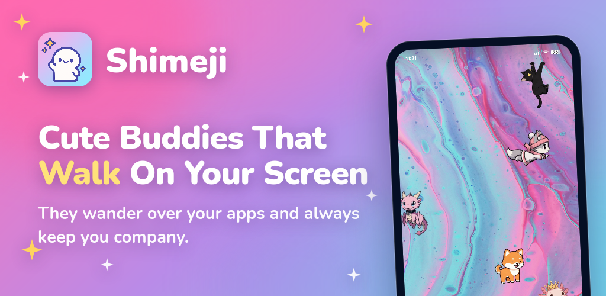
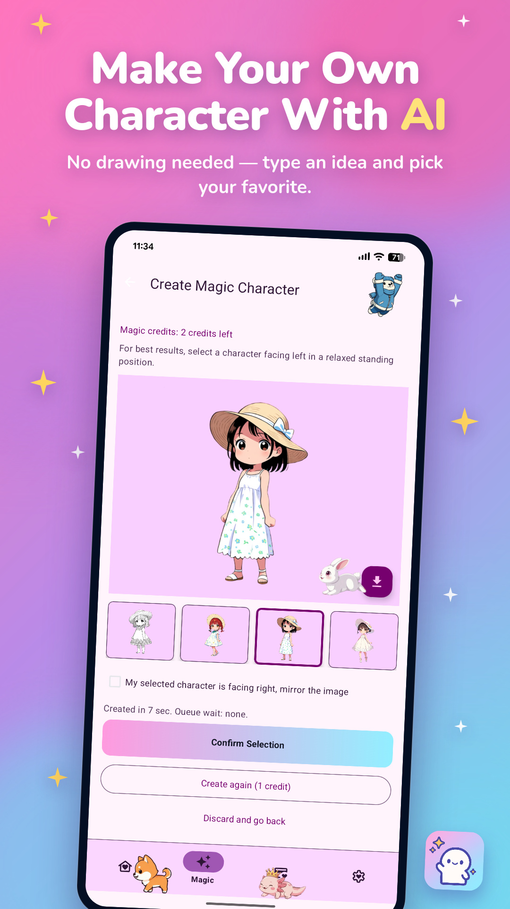

Shimeji 深度盘点：一只安卓桌宠，跑了十年还在涨本事
从 2009 年电脑版的 Java 小程序，到现在安卓商店里功能最厚的桌宠应用——Shimeji 把跨应用浮层、自创角色、皮肤导入和养成系统揉在一起，做成了一件越玩越深的事。本文按能力域系统梳理它到底能做什么、亮点在哪，以及有哪些绕不开的短板。
一个跑了超过十年的桌宠应用，最近两年突然更新得特别凶。先是 Magic AI 生成角色，然后是图片一键变桌宠、逐帧编辑器、电脑版皮肤包直接导入——回头翻发现这些新能力全部堆在同一部安卓应用里，没有拆分、没有付费墙拦着。
这就是 Shimeji官网。如果你的手机上还没有浮在所有应用画面之上散步的小角色，那它值得认真盘一遍：一个品类几乎被做透之后，还能往哪里长本事。

能力域一：屏幕上的活物系统
Shimeji 的基本盘是跨应用浮层——这也是它和静态壁纸、桌面挂件最本质的区别。普通挂件固定在桌面格子里，Shimeji 的角色则是全屏游走的：聊天时爬在输入框旁边、刷视频时倒挂在状态栏、亮屏时自己攒经验值升级。这套行为系统不是几段动画循环，而是一套带状态机的小逻辑：
- 基础动作：散步、爬墙、倒挂、落地弹跳、原地打盹，不同触发条件随机切换；
- 互动反馈：点击有反应动画，长按能拎起来甩出去，等级够了解锁抛掷——抛出去的角色会在空中翻个跟头再落地；
- 养成经济：亮屏自动积累「蘑菇」货币，升级解锁新动作、新角色，整条养成线不绑广告也不强制氪金。
亮点在于不干扰正常使用。角色默认个头不大，散步路径自动避开按钮密集区——你照常用微信、刷 YouTube、打游戏，它们在旁边自娱自乐。想清净时一键隐藏，想热闹时多放几只也不会把屏幕塞满。这一点很多同类桌宠做不到：要么角色太大碍事，要么行为太乱挡操作。

能力域二：四条创造路线，从 AI 到手绘
桌宠品类一直有个矛盾：内置角色玩腻了怎么办？Shimeji 给出的答案是四条平行的创造路线，覆盖从零门槛到重度创作者的全部需求：
Magic AI 文字生成：输入一句描述——「戴帽子的柴犬、穿宇航服的猫、像素风格的史莱姆」——应用直接生成一套可用的角色，包含站立、行走、攀爬等整套动作帧。这是近年迭代里变化最大的一块，从早期只能出低精度轮廓到现在能还原比较细致的特征。
图片变桌宠：选一张自己画的、或者宠物照片（要求轮廓清晰、背景干净、全身站立），应用自动抠出角色并生成候选动作帧。生成完还有挑帧界面让你筛掉不满意的帧，新版还加了镜像翻转一键修正朝向问题。不想花额度的，也可以直接把现成皮肤包导进来。
逐帧手绘编辑器：对创作者来说这是最有价值的一条——每一帧动作都能逐像素修、逐帧画。内置的参考层和洋葱皮功能让画连续动作没那么痛苦，产出的角色可以直接上屏活动。
导入电脑版皮肤包：2009 年那个开源电脑版 Shimeji 积累了十几年的社区皮肤包生态，安卓版现在可以直接吃进来用。相当于把老玩家手里攒了十年的素材库，一键搬到手机上。
四条路线不是互斥的——很多创作者先用 AI 生成初稿，再进逐帧编辑器精修，最后攒成一套皮肤包导入电脑版继续用。整条链路打通之后，Shimeji 变成了一个桌宠素材创作平台，而不只是一个消费内容的应用——想了解每条路线的具体参数和调优技巧，翻翻Shimeji文档能省不少时间。

能力域三：生态互通，不止手机屏幕
Shimeji 的玩法没有停留在手机屏幕内，它有一个横跨电脑、浏览器、姊妹应用的小生态：
- 浏览器扩展：社区运营的 Chrome 扩展把桌宠搬到了网页上——小角色爬在页面边缘、抓窗口，官方声明不收集个人数据、角色与设置只存本地。想在电脑上也养几只的话是最低成本的选择；
- 电脑版原作与分支：2009 年前后的开源 Java 版是整个玩法的源头，社区分支 Shimeji-ee 在 Windows 上维护多年，跨平台重制分支也在活跃更新。安卓皮肤包的大量货源就来自这里；
- 姊妹应用 Yumeji：同一开发者做的照片变 AI 动态壁纸应用——壁纸铺满全屏背景，桌宠是前台小角色，两者分工明确。
这套生态的好处是素材通吃：你在电脑版 Shimeji-ee 上攒的皮肤包，手机版直接导入；反过来手机上用逐帧编辑器画的角色，也能打包成电脑版格式。一款应用撑起整条桌宠素材生产链，这在同类里不多见。
能力域四：认准正主，避开商店里的仿冒
应用商店里带着 Shimeji 字样的桌宠应用不少，但内置角色、解锁系统、导入支持各不相同。认准两条就不会装混：开发者 Digital Cosmos 和包名 com.digitalcosmos.shimeji。
商店里的应用名经历过几次变化（早期 Shimeji: Play with Screen Pets，后来 Shimeji: Screen Buddies），但开发者和包名没变。优先选商店版而非安装包版——商店版更新最及时，Magic AI、图片变桌宠、逐帧编辑器、导入电脑版皮肤包这些新能力只在新版里；安装包版停在 v5.8，约 7MB 的体积，没有自创和导入入口，无商店环境的设备可以从下载渠道获取安装包。
短板也要说
Shimeji 当然不是没有代价的选择：
权限依赖商店更新。跨应用浮层在国内安卓厂商系统上经常被系统清理或限制，商店版能及时收到适配更新，安装包版则没有这个渠道；角色多了占资源。同时挂十几只角色的话，中低端机型上能感觉到掉帧，虽然默认角色数量控制在 3~5 只；内存占用不算小。长期后台运行能稳定占 100MB 左右，对内存紧张的设备来说是一笔固定开销。
此外四条创造路线的额度分配比较复杂——AI 生成和图片变桌宠都有每日额度，额度用完只能等第二天或者看广告。对重度创作者来说，直接导入电脑版皮肤包反而是最省额度的方式。
什么样的人该用它
轻度休闲党：想让手机屏幕有点生气、又不想折腾的人——装上、授权、放几只内置角色，就能立刻拥有一个活的桌面。不需要养成、不需要创造，看它们散步打盹就能打发碎片时间。
二次元创作者：自己有画稿、想让角色动起来的人——图片变桌宠能把一张静态画变成活动角色，逐帧编辑器能精修每一帧动作。画完还能打包进电脑版生态继续用，相当于多了一条素材分发渠道。
桌面装扮爱好者：追求「桌面有生气」这件事的玩家——从静态壁纸到动态壁纸到桌宠，这是同一方向上的三步进阶。如果你已经把动态壁纸玩腻了，Shimeji 是下一层。
值得提一句，同一开发者在浏览器扩展、电脑版分支、姊妹应用 Yumeji 之间的维护节奏是联动的——桌宠这边加了新动作，电脑版分支通常几个月内就能跟上。一个跑了十年的应用还在稳定迭代，这件事本身就让人放心。关于这款应用的完整资料与素材备份，海外的 GitHub 和国内的 Gitee、GitCode 三个镜像仓库都在同步维护，国内访问选 Gitee 或 GitCode 体验更好。